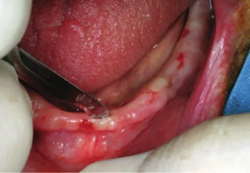
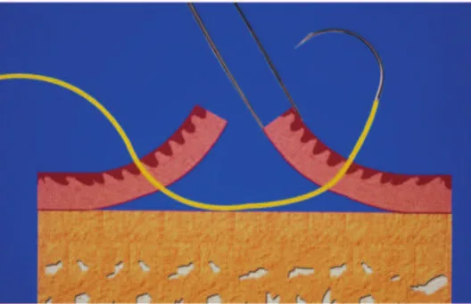

نسخه استخراجشده؛ ترجمه یا تأیید علمی انجام نشده است. وضعیت: captured
لایهی اول — خونرسانی فلپ. طراحی باید عروق کافی فراهم کند تا از نکروز ایسکمیک فلپ جلوگیری شود و احتمال باز شدن خط برش کاهش یابد.
و اگر بافت پالاتال یا بافت دیستال به فلپ بیدلیل از استخوان جدا شود، خونرسانی به خط برش با تأخیر برقرار میشود — یعنی بازهای هست که لبه زنده است ولی خون کافی ندارد.
این را با درس قبل کنار هم بگذار: بافت گرانوله برای ساختن فیبروبلاست به اکسیژن و مواد مغذی نیاز دارد که از عروق میآید. پس نکروز ایسکمیک فقط بافت را نمیکشد؛ ترمیم را هم متوقف میکند.
لایهی دوم — رطوبت بافت. این لایه آنقدر مهم است که قاعدهای مستقل دارد: «از خشک شدن بافت جلوگیری کن». بافتها باید در محیطی مرطوب و بدون دورههای طولانی خشکی نگه داشته شوند.
این سادهترین و ارزانترین اقدام در پیشگیری از باز شدن خط برش است — و یکی از فراموششدهترینها. لبهی خشکشده کمتر به بستهشدن کامل میرسد؛ اگر لبهها خشک شدند، آنها را دورهای با سالین استریل (سدیم کلرید ۰٫۹ درصد) یا گاز آغشته به سالین مرطوب کن.
لایهی سوم — کشش، و مهمترین خطای مفهومی: کشش زیاد فلپ شایعترین علت باز شدن خط برش است.
یکی از عوارض شایعی که به باز شدن خط برش میانجامد، این است که درمانگر از بخیه برای بازموقعیتدهی فعال فلپهای موکوپریوستیال استفاده کند.
به کلمهی «فعال» دقت کن. بخیه قرار است لبههایی را که از پیش کنار هم آمدهاند نگه دارد، نه اینکه آنها را بهزور کنار هم بیاورد. اگر برای بستن باید بکشی، مشکل در مرحلهی رهاسازی است نه در بخیه.
این همان اصلی است که در یونیت GBR هم دیدی: بخیه کشش را حذف نمیکند، فقط پنهانش میکند.
و لایهی چهارم — پوشش آنتیبیوتیکی. آنتیبیوتیک پیشگیرانهی سیستمیک باید در فاز درمانی پیش و پس از عمل به کار رود. و برای محلهای پیوند، یک آنتیبیوتیک موضعی (مانند Ancef یا Cleocin) باید به گرافت افزوده شود برای پوشش ضدمیکروبی بیشتر.
دهانشویهی ضدمیکروبی: روش دیگری برای پروفیلاکسی ضدمیکروبی در جراحی ایمپلنت، استفاده از دهانشویهی کلرهگزیدین دیگلوکونات ۰٫۱۲ یا ۰٫۲ درصد است.

نخ ایدهآل سه ویژگی دارد و هرکدام پیامد بالینی خودش را دارد.
۱. استحکام کششی بالا. تعریف دقیق: نیروی اندازهگیریشده — برحسب پوند — که نخ پیش از پاره شدن تحمل میکند.
و پیامدش: نخی با استحکام کششی پایین به شکستن نخ میانجامد که به احتمال زیاد ترمیم خط برش را به خطر میاندازد.
و یک نکتهی عملی که ساده ولی مهم است: با کاهش قطر نخ، استحکام کششی آن هم کاهش مییابد. یعنی انتخاب نخ نازکتر برای زیبایی، هزینهای در استحکام دارد که باید آگاهانه پذیرفته شود.
۲. واکنش بافتی پایین. واکنش بافت به نخ بهصورت پاسخ التهابی بروز میکند که معمولاً در ۲ تا ۷ روز اول پس از بخیه زدن ایجاد میشود.
این بازه را با تقویم ترمیم کنار هم بگذار: همان روزهایی که زخم آسیبپذیرترین است، نخ خودش میتواند التهاب اضافه کند.
۳. رفتار جذب و افت استحکام — و اعدادش:
رفتار مواد مختلف یکسان نیست. نکات کلیدی:
• کرومگات ظرف ۷ تا ۱۰ روز استحکامش را از دست میدهد و در همین بازه با آنزیمهای پروتئولیتیک بدن هضم میشود؛ پلینگات از این هم زودتر. گاتها در pH پایین — ناشی از عفونت، داروها، اختلالات متابولیک یا خشکی دهان — باز هم سریعتر تجزیه میشوند و برای جراحی ایمپلنت انتخاب مناسبی نیستند.
• ویکریل (پلیگلاکتین) در ۲ هفته بیشتر استحکامش را نگه میدارد (حدود ۶۰ تا ۷۵ درصد) و جذبش تا حدود روز چهلم حداقلی است؛ PDS کندتر است و حدود ۲۵ درصد را در ۶ هفته هنوز دارد؛ و ابریشم ظرف حدود یک سال همه یا بیشتر استحکامش را از دست میدهد.
• و یادت باشد ویژگیهای فردی بیمار میتواند بر سرعت افت استحکام کششی اثر بگذارد — یعنی این اعداد میانگیناند نه تضمین.
گزینههای مشخص:
• ابریشم — یک الیاف طبیعی که فرآیند تولید خاصی را میگذراند تا برای جراحی مناسب شود؛ ولی چندرشتهای است و مایع و باکتری را در امتداد خود به زخم میکشد (wicking).
• PGA — مزیتش جذبی بودن همراه با استحکام کششی عالی است.
• پلیپروپیلن (پرولن) — مونوفیلامان است و با گذشت زمان استحکام کششی خود را از دست نمیدهد.
• PTFE (سایتوپلاست) — گزینهی غیرقابلجذب با استحکام کششی بالا و غیرفتیلهای (nonwicking).
• چرا PGA کندتر جذب میشود — چون از پلیمر سنتتیک ساخته شده و با هیدرولیز تجزیه میشود، نه با آنزیم؛ پس از pH پایین اثر نمیپذیرد و خط برش را با استحکام کششی بسیار طولانیتر از بیشتر نخها نگه میدارد.
و مزیت جذبیها: نیاز به کشیدن بخیه ندارند — که در جراحیهای پرخطر، خودش یک ریسک را حذف میکند.
تکنیکهای اصلی بخیه: سادهی منقطع، تشکی افقی، تشکی عمودی (دور-دور-نزدیک-نزدیک)، هشتشکل، و ممتد. و یک ترکیب کاربردی: چند بخیهی تشکی افقی همراه با یک بخیهی ممتد.
